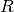
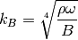

seapy.components.plate.SubsystemBend¶
- class seapy.components.plate.SubsystemBend(name, system, **properties)[source]¶
Bases: seapy.subsystems.subsystemstructural.SubsystemStructural
Subsystem for bending waves in a 2D isotropic component.
- __init__(name, system, **properties)¶
Constructor.
Parameters: - name (string) – Identifier
- component (SeaPy.components.Component) – Component
Methods
__init__(name, system, **properties) Constructor. addExcitation(name, model, **properties) Add excitation to subsystem. disable([couplings]) Disable this subsystem. enable([couplings]) Enable this subsystem. info([attributes]) Return dataframe. plot(quantity[, yscale]) Plot quantity. Attributes
SORT str(object=’‘) -> str average_frequency_spacing Average frequency spacing for bending waves in a 2D isotropic plate. classname Name of class of the object. component conductance Conductance  .
.conductance_point_average Average point conductance of a structural component. damping_term The damping term is the ratio of the modal half-power bandwidth to the average modal frequency spacing. dlf Damping loss factor of subsystem. enabled Switch indicating whether the object is enabled. energy Total energy  in subsystem.
in subsystem.flexural_rigidity Flexural rigidity of a plate. frequency Frequency. impedance Impedance 
impedance_point_force Point impedance. included Indicates whether the object is included in the analysis. linked_couplings_from linked_couplings_to linked_excitations mobility Mobility Y modal_density Modal density. modal_energy Class capable of containing spectral values. modal_overlap_factor Modal overlap factor. name power_input Total input power due to excitations. resistance Resistance , the real part of the impedance .resistance_point_average Average point resistance. soundspeed_group Group velocity for bending wave. soundspeed_phase Phase velocity for bending wave. tlf Total loss factor. velocity Vibrational velocity  .
.velocity_level Velocity level  .
.wavenumber Wavenumber of flexural waves in a plate. - average_frequency_spacing[source]¶
Average frequency spacing for bending waves in a 2D isotropic plate.
Return type: numpy.ndarray 
with:
- radius of gyration

- soundspeed of longitudinal waves

- plate area

See Lyon, eq 8.2.5
- radius of gyration
- flexural_rigidity[source]¶
Flexural rigidity of a plate.
Return type: numpy.ndarray with:
- Young’s modulus
- plate thickness/height

- Poisson’s ratio

See Craik, equation 3.2, page 48.
- Young’s modulus
- impedance_point_force[source]¶
Point impedance.
with:
- density of the plate

- radius of gyration
- soundspeed of longitudinal waves
See Lyon, page 201, table 10.1
- density of the plate
- soundspeed_group[source]¶
Group velocity for bending wave.
Return type: numpy.ndarray See Lyon, above eq. 8.2.5
- soundspeed_phase[source]¶
Phase velocity for bending wave.
Return type: numpy.ndarray with:
- Angular frequency

- Bending stiffness

- surface density
See Craik, equation 5.19, page 128.
Note that this is the same as
See Lyon, above eq. 8.2.5
- Angular frequency
- wavenumber[source]¶
Wavenumber of flexural waves in a plate.
Return type: numpy.ndarray 
with:
- density of the plate
- angular frequency
- flexural rigidity
See Langley and Heron, 1990, eq 18.
- density of the plate